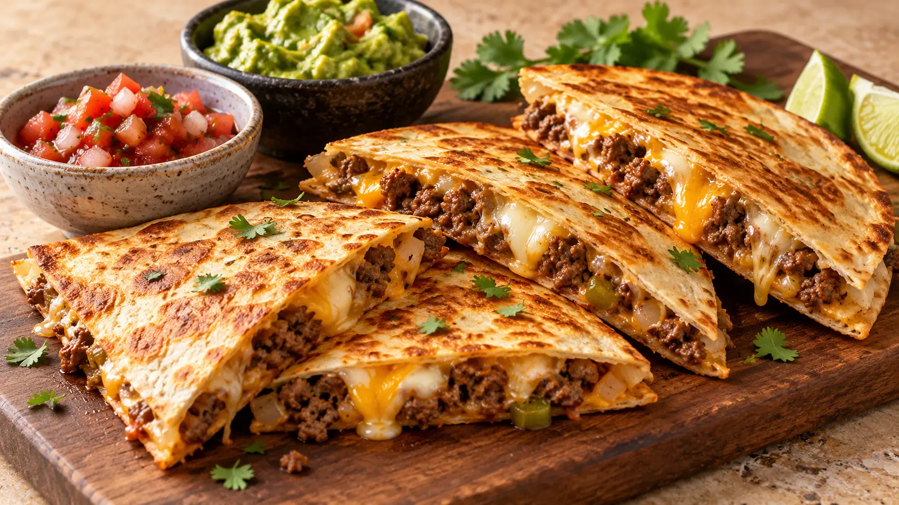

THE RECIPE COLLECTION
All Recipes
Browse 213 BiteSparks recipes with clear ingredients, timing, and beginner-friendly instructions.
213 recipes
No matching recipes yet. Try another recipe name, ingredient, cuisine, or tag.

Dinner
Creamy Lemon Chicken Pasta
Silky lemon cream sauce, tender chicken, and pasta for an easy weeknight favorite.

Breakfast
Smashed Avocado Toast
Creamy avocado, crisp toast, chili flakes, and a bright squeeze of lemon.

Seafood
Honey Garlic Salmon Bowls
Glazed salmon, fluffy rice, crunchy vegetables, and a simple honey-garlic sauce.

Dessert
Greek Yogurt Berry Parfait
Layers of creamy yogurt, juicy berries, crunchy granola, and honey.

Dessert
Chocolate Cake
A classic American chocolate layer cake with moist cocoa layers and smooth chocolate buttercream frosting.

Soup
Cozy Garden Vegetable Soup
A hearty vegetable soup packed with beans, herbs, and comforting flavor.

Chicken
Honey Glazed Chicken Breast
Juicy chicken breast coated in a sticky honey-garlic glaze for a fast, family-friendly weeknight dinner.

Dinner
Classic Family Meatloaf
A tender, savory beef meatloaf finished with a sweet and tangy ketchup glaze.

Dinner
Creamy Baked Mac and Cheese
Ultra-creamy macaroni and cheese baked with a golden, buttery breadcrumb topping.

Dinner
Classic Homemade Lasagna
Layered lasagna with rich meat sauce, creamy ricotta, mozzarella, and Parmesan.

Chicken
Crispy Air Fryer Chicken Wings
Extra-crispy chicken wings made in the air fryer and tossed with a buttery buffalo sauce.

Dinner
Golden Baked Pork Chops
Tender baked pork chops with a savory mushroom and onion sauce.

Dinner
Old-Fashioned Beef Stew
Tender beef, potatoes, carrots, celery, and herbs simmered into a rich comforting stew.

Dinner
Easy Ground Beef Tacos
Seasoned ground beef tucked into crisp taco shells with fresh, crunchy toppings.

Dinner
Classic Spaghetti and Meatballs
Tender beef-and-sausage meatballs simmered in homemade marinara and served over spaghetti.

Breakfast
Fluffy Buttermilk Pancakes
Tall, tender buttermilk pancakes with crisp golden edges, butter, and maple syrup.

Breakfast
Classic Banana Banana Bread
Moist, tender banana bread packed with ripe banana flavor and a buttery brown-sugar crumb.

Dessert
Easy Sugar Cookies
Simple buttery sugar cookies with crisp edges and a soft, tender center.

Dinner
Classic Slow Cooker Pot Roast
Fall-apart tender beef pot roast with carrots, potatoes, onion, and a rich savory cooking broth.

Dinner
Classic Chicken Pot Pie
Creamy chicken and vegetables baked under a golden, flaky pie crust for classic American comfort food.

Dessert
Classic Chocolate Chip Cookies
Crisp-edged, chewy-centered chocolate chip cookies with plenty of melted chocolate in every bite.

Chicken
Southern Fried Chicken
Crispy, golden Southern-style fried chicken with juicy seasoned meat and a crunchy coating.

Appetizer
Buffalo Chicken Dip
Creamy, cheesy Buffalo chicken dip with tangy hot sauce, ranch, and tender shredded chicken.

Pasta
Chicken Alfredo
Creamy chicken Alfredo with tender fettuccine, garlic, Parmesan, and golden pan-seared chicken.

Chicken
Chicken Parmesan
Crispy Parmesan-crusted chicken baked with marinara, mozzarella, and fresh herbs.

Dinner
Chicken Enchiladas
Tender shredded chicken rolled in tortillas, covered with red enchilada sauce, and baked with melted cheese.

Chicken
Chicken Fajitas
Sizzling chicken fajitas with colorful peppers, onions, warm tortillas, and fresh lime.

Dinner
Chicken Fried Rice
Fast chicken fried rice made with chilled rice, tender chicken, scrambled eggs, vegetables, and savory soy sauce.

Salad
Chicken Caesar Salad
Crisp romaine, juicy chicken, crunchy croutons, Parmesan, and creamy Caesar dressing in a satisfying classic salad.

Soup
Chicken Noodle Soup
Comforting homemade chicken noodle soup with tender chicken, vegetables, herbs, and egg noodles in a rich broth.

Dinner
Chicken and Rice Casserole
A creamy American-style chicken and rice casserole with tender chicken, vegetables, cheddar, and a golden baked finish.

Dinner
Chicken Bacon Ranch Casserole
A creamy chicken bacon ranch pasta casserole with cheddar, tender chicken, smoky bacon, and a bubbly baked top.

Chicken
BBQ Chicken
Juicy American barbecue chicken with smoky seasoning and a sticky, caramelized barbecue sauce glaze.

Beef
Chicken Fried Steak
Southern-style chicken fried steak made with tenderized beef, a crisp seasoned crust, and creamy peppered country gravy.

Dinner
Chicken and Dumplings
Classic Southern chicken and dumplings with tender chicken, vegetables, a creamy savory broth, and fluffy drop dumplings.

Chicken
Chicken Marsala
Italian-American chicken Marsala with golden chicken cutlets, mushrooms, and a savory Marsala wine pan sauce.

Chicken
Chicken Piccata
Bright Italian-American chicken piccata with thin golden cutlets, lemon, capers, butter, and a light pan sauce.

Dinner
Chicken Parmesan Casserole
A family-style chicken Parmesan casserole with pasta, marinara, tender chicken, mozzarella, Parmesan, and a crisp breadcrumb topping.

Chicken
Creamy Tuscan Chicken
Creamy Tuscan-style chicken with sun-dried tomatoes, spinach, garlic, Parmesan, and a rich skillet sauce.

Chicken
Marry Me Chicken
Modern American Marry Me Chicken with golden chicken, sun-dried tomatoes, Parmesan, herbs, and a creamy garlic pan sauce.

Beef
Classic Cheeseburger
A juicy American cheeseburger with a deeply browned beef patty, melted American cheese, crisp toppings, and a toasted sesame bun.

Beef
Smash Burgers
Thin, crisp-edged smash burgers with caramelized beef, melted cheese, tangy burger sauce, pickles, and toasted soft buns.

Beef
Beef Stroganoff
Tender strips of beef and mushrooms in a creamy, savory stroganoff sauce served over buttery egg noodles.

Beef
Classic Beef Chili
A hearty American beef chili simmered with tomatoes, beans, peppers, warm spices, and rich ground beef.

Beef
Chili Mac
A cozy one-pot chili mac with seasoned ground beef, tomatoes, beans, tender macaroni, and melted cheddar cheese.

Beef
Beef Enchiladas
Cheesy Tex-Mex beef enchiladas filled with seasoned ground beef, rolled in corn tortillas, and baked in red enchilada sauce.

Beef
Beef Burritos
Big, satisfying beef burritos packed with seasoned ground beef, rice, beans, cheese, salsa, and fresh toppings.

Beef
Beef Fajitas
Sizzling beef fajitas with marinated steak, charred peppers and onions, warm tortillas, lime, and classic Tex-Mex toppings.

Beef
Philly Cheesesteak
A classic-style Philly cheesesteak with thinly sliced ribeye, caramelized onions, melted provolone, and a toasted hoagie roll.

Beef
French Dip Sandwiches
Warm French dip sandwiches layered with tender roast beef and provolone on toasted rolls, served with rich beef au jus for dipping.

Beef
Sloppy Joes
Saucy, savory-sweet ground beef simmered with peppers, onion, tomato, mustard, and Worcestershire, piled onto toasted buns.

Beef
Salisbury Steak
Tender seasoned beef patties served in a rich mushroom-and-onion brown gravy for a classic American comfort-food dinner.

Beef
Salisbury Steak Meatballs
Juicy beef meatballs finished in a savory mushroom-and-onion Salisbury-style gravy, ideal with mashed potatoes or noodles.

Beef
Beef and Broccoli
Tender slices of beef and crisp broccoli tossed in a glossy savory stir-fry sauce for a Chinese-American takeout favorite.

Beef
Korean Beef Bowls
Fast Korean-inspired ground beef glazed with soy, gochujang, garlic, ginger, and sesame, served over hot rice.

Beef
Ground Beef Casserole
A hearty baked casserole of seasoned ground beef, egg noodles, tomato, sour cream, and melted cheddar cheese.

Beef
Beef Nachos
Crisp tortilla chips layered with taco-seasoned beef, melted cheese, jalapeño, tomato, onion, and fresh toppings.

Beef
Beef Quesadillas
Golden flour tortillas filled with warmly spiced ground beef and plenty of melted cheese for an easy skillet meal.

Beef
Steak Bites
Tender bite-size pieces of sirloin seared until deeply browned and finished with butter, garlic, thyme, and parsley.

Beef
Garlic Butter Steak
Pan-seared steak with a deep brown crust, basted with foaming garlic-herb butter for a simple steakhouse-style dinner.

Pork
Pulled Pork
Fork-tender pork shoulder slow-cooked with a smoky-sweet barbecue sauce, then shredded and served piled high on soft buns.

Pork
BBQ Ribs
Smoky pork ribs seasoned with a savory dry rub, cooked low and slow, then lacquered with sticky barbecue sauce.

Pork
Baby Back Ribs
Tender baby back ribs baked until nearly fall-off-the-bone, then finished with a caramelized barbecue glaze.

Pork
Pork Tenderloin
Juicy oven-roasted pork tenderloin with a savory herb-and-garlic crust, seared first for deep flavor and a tender center.

Pork
Pork Carnitas
Slow-roasted pork shoulder seasoned with citrus and warm spices, shredded and crisped at the edges for taco-ready carnitas.

Pork
Pork Belly
Smoky pork belly cubes cooked until tender, then glazed with butter, brown sugar, and barbecue sauce for sticky burnt-end-style bites.

Pork
Pork Loin Roast
A juicy center-cut pork loin roast with a savory herb crust, roasted gently and rested for clean, tender slices.

Pork
Sausage and Peppers
Italian-American pork sausages simmered with sweet bell peppers, onions, garlic, tomatoes, and herbs in a hearty skillet sauce.

Breakfast
Biscuits and Gravy
Flaky warm biscuits smothered with creamy Southern-style pork sausage gravy seasoned with plenty of black pepper.

Pork
Ham and Cheese Casserole
Creamy baked pasta folded with smoky ham and two cheeses, finished with a crisp buttery breadcrumb topping.

Breakfast
French Toast
Classic American French toast with crisp buttery edges and a soft vanilla-custard center, ready for maple syrup and fresh fruit.

Breakfast
Cinnamon French Toast
Warm cinnamon-spiced French toast with caramelized buttery edges and a tender custard center.

Breakfast
Breakfast Burritos
Crisp breakfast burritos packed with fluffy eggs, savory ham, cheese, and fresh tomato for a filling make-ahead breakfast.

Breakfast
Breakfast Casserole
A crowd-friendly American breakfast casserole layered with eggs, bacon, vegetables, and melted cheddar.

Breakfast
Sausage Breakfast Casserole
Sausage breakfast casserole with bread, eggs, milk, and cheddar baked until golden and set.

Breakfast
Eggs Benedict
Classic Eggs Benedict with toasted English muffins, Canadian bacon, poached eggs, and silky lemon hollandaise.

Breakfast
Hash Browns
Crispy skillet hash browns with deeply golden edges and tender shredded potato centers.

Breakfast
Home Fries
Diner-style home fries with crisp-edged potatoes, sweet onion, bell pepper, and savory breakfast seasoning.

Breakfast
Breakfast Tacos
Easy breakfast tacos filled with fluffy scrambled eggs, chorizo, cheese, avocado, and fresh salsa.

Soup
Tomato Soup
A bright, classic tomato soup made with pantry tomatoes, aromatic vegetables, and basil for an easy American comfort-food lunch.

Soup
Creamy Tomato Soup
Silky creamy tomato soup with garlic, basil, Parmesan, and a gentle splash of cream for a rich, cozy bowl.

Soup
Potato Soup
Thick loaded potato soup with tender russets, smoky bacon, cheddar, and a creamy broth that stays hearty rather than gluey.

Soup
Broccoli Cheddar Soup
Creamy broccoli cheddar soup packed with tender florets, carrots, and freshly grated sharp cheese in every spoonful.

Soup
Clam Chowder
New England-style clam chowder with tender clams, potatoes, bacon, and a creamy savory broth seasoned with thyme.

Soup
Chicken Tortilla Soup
A zesty chicken tortilla soup with tomatoes, black beans, corn, smoky spices, and crisp tortilla strips for topping.

Soup
Taco Soup
A fast one-pot taco soup loaded with seasoned ground beef, beans, corn, tomatoes, and familiar Tex-Mex toppings.

Soup
French Onion Soup
Deeply caramelized onion soup with savory beef broth, toasted baguette, and a bubbling Gruyère cheese cap.

Soup
Beef Barley Soup
Hearty beef barley soup with browned chuck, tender vegetables, and chewy pearl barley in a rich savory broth.

Soup
Split Pea Soup
Classic split pea soup simmered with smoky ham, tender vegetables, and herbs until naturally thick and comforting.

Dessert
Apple Pie
Classic American apple pie with tender cinnamon apples baked inside a flaky double crust.

Dessert
Pumpkin Pie
Silky pumpkin custard pie baked in a flaky crust with warm fall spices.

Dessert
Pecan Pie
Classic pecan pie with a flaky crust, toasted pecans, and a glossy caramel-like filling.

Dessert
Key Lime Pie
Tangy Key lime pie with a graham cracker crust, creamy citrus filling, and whipped cream.

Dessert
Cheesecake
Creamy baked cheesecake with a buttery graham cracker crust and a smooth vanilla filling.

Dessert
New York Cheesecake
Tall, dense New York cheesecake with browned edges, a creamy center, and a crisp crumb crust.

Dessert
Carrot Cake
Moist spiced carrot cake layered with tangy cream cheese frosting and toasted nuts.

Dessert
Red Velvet Cake
Soft red velvet layer cake with a light cocoa flavor and classic cream cheese frosting.

Dessert
Brownies
Fudgy chocolate brownies with crackly tops, chewy edges, and rich cocoa flavor.

Dessert
Blondies
Chewy brown sugar blondies with buttery vanilla flavor and golden crackly tops.

Dessert
Vanilla Cake
A classic American vanilla layer cake with a soft golden crumb and fluffy vanilla buttercream.

Dessert
Apple Crisp
Tender cinnamon apples baked beneath a generous golden oat streusel until the fruit juices turn thick and bubbling.

Dessert
Peach Cobbler
Juicy cinnamon-scented peaches baked beneath tender golden buttermilk biscuit topping.

Dessert
Blueberry Muffins
Tall bakery-style blueberry muffins with tender vanilla crumb, juicy berries, and crisp sugared tops.

Dessert
Chocolate Chip Muffins
Golden bakery-style vanilla muffins with tall domes and semisweet chocolate chips in every bite.

Dessert
Cinnamon Rolls
Soft, fluffy cinnamon rolls layered with brown sugar filling and finished with tangy cream cheese icing.

Dessert
Banana Pudding
Classic Southern banana pudding layered with vanilla custard, fresh bananas, vanilla wafers, and whipped cream.

Dessert
Chocolate Fudge
Rich, smooth chocolate fudge made with semisweet chocolate, condensed milk, vanilla, and a pinch of salt.

Dessert
Peanut Butter Cookies
Classic peanut butter cookies with crisp edges, tender centers, and the traditional fork crosshatch.

Appetizer
Air Fryer French Fries
Crisp golden air fryer French fries with fluffy centers, light seasoning, and far less oil than deep-fried potatoes.

Chicken
Air Fryer Chicken Breast
Juicy air fryer chicken breasts with a savory paprika-herb crust and a dependable quick-cooking method.

Seafood
Air Fryer Salmon
Tender, flaky air fryer salmon with lemon, garlic, paprika, and crisp seasoned edges in under twenty minutes.

Beef
Air Fryer Steak
Air fryer ribeye steaks with a browned peppery crust, juicy center, and melting garlic-herb butter.

Appetizer
Air Fryer Mozzarella Sticks
Crunchy homemade air fryer mozzarella sticks with stretchy cheese centers and warm marinara for dipping.

Pasta
One-Pot Chicken Pasta
Creamy tomato one-pot chicken penne with spinach, Parmesan, and a savory weeknight sauce.

Dinner
One-Pot Taco Pasta
Cheesy one-pot taco pasta loaded with seasoned beef, black beans, corn, tomatoes, and tender shells.

Chicken
Slow Cooker Chicken
Tender slow cooker chicken thighs with potatoes, carrots, onions, herbs, and a rich savory gravy.

Beef
Slow Cooker Chili
Thick slow cooker beef chili with two kinds of beans, tomatoes, peppers, and deeply layered spices.

Pork
Slow Cooker Pulled Pork
Fall-apart slow cooker pork shoulder infused with a sweet, smoky barbecue marinade and finished with its savory cooking juices.

Chicken
Chicken Tikka Masala
Charred yogurt-marinated chicken in a silky, warmly spiced tomato and cream sauce.

Chicken
Chicken Curry
Home-style chicken curry with tender thighs in a deeply aromatic onion and tomato gravy.

Beef
Beef Wellington
Beef tenderloin wrapped with mushroom duxelles, prosciutto, and crisp golden puff pastry.

Beef
Steak and Kidney Pie
Traditional steak and kidney pie with tender meat, dark savory gravy, and flaky pastry.

Beef
Cottage Pie
Rich minced beef and vegetables beneath a crisp, buttery mashed-potato topping.

Dinner
Shepherd's Pie
Savory minced lamb and vegetables baked beneath fluffy golden mashed potatoes.

Dinner
Lancashire Hotpot
Slow-baked Lancashire lamb and onions under overlapping crisp golden potato slices.

Beef
Beef and Ale Pie
Tender beef and vegetables in dark ale gravy beneath burnished flaky pastry.

Chicken
Chicken and Leek Pie
Tender chicken and sweet leeks in creamy herb sauce under crisp puff pastry.

Seafood
Fish Pie
White fish and salmon with peas in creamy parsley sauce beneath golden mashed potatoes.

Dessert
Apple Crumble
Caramelized lemony apples beneath a buttery oat-and-brown-sugar crumble.

Dessert
Eton Mess
Crisp vanilla meringue, juicy strawberries, and softly whipped cream folded into a classic British dessert.

Dessert
Victoria Sponge
Two light vanilla sponge layers filled with berry jam and softly whipped cream.

Dessert
Bakewell Tart
A crisp pastry shell layered with strawberry jam, almond frangipane, and crushed amaretti.

Dessert
Lemon Drizzle Cake
Moist lemon loaf soaked with sparkling citrus syrup and finished with sharp lemon icing.

Dessert
Scones
Tall, tender English scones with flaky layers, ready for jam and clotted cream.

Dessert
Christmas Pudding
A richly spiced steamed pudding packed with dried fruit, orange, molasses, and buttery crumbs.

Dessert
Mince Pies
Buttery individual pies filled with whiskey-soaked apple, citrus, and richly spiced dried fruit.

Dessert
Treacle Tart
A crisp shortcrust tart filled with sticky golden syrup, brown breadcrumbs, lemon, and dark treacle.

Dessert
Rice Pudding
Creamy stovetop rice pudding gently simmered with whole milk, vanilla, and cinnamon.

Dessert
Bread and Butter Pudding
Buttered bread and sultanas baked in a vanilla-nutmeg custard until golden and softly set.

Chicken
Chicken Balti
Birmingham-style chicken balti cooked quickly with fresh tomato, ginger, garlic, and aromatic spices.

Beef
Beef Madras
A bold restaurant-style beef brisket Madras with layered chilli, toasted spices, lemon, and kasuri methi.

Dinner
Lamb Curry
Tender lamb simmered in a tomato-rich British curry-house style sauce with ginger, garlic, warm spices, and coriander.

Pork
Sausage Casserole
An oven-baked British sausage casserole with tomato, stock, vegetables, herbs, and a rich, thick gravy.

Breakfast
Bubble and Squeak
Crisp-edged mashed potato and cabbage cakes fried in butter until golden outside and soft within.

Appetizer
Welsh Rarebit
Buttered toast topped with a smooth cheddar, ale, butter, and mustard cheese sauce, served hot.

Appetizer
Scotch Eggs
Soft-cooked eggs wrapped in Italian sausage, breaded, and fried until crisp and golden.

Breakfast
Full English Breakfast
A Full Monty fry-up with sausages, bacon, eggs, tomatoes, mushrooms, baked beans, black pudding, fried bread, toast, jam, and tea.

Breakfast
Kedgeree
Gently spiced rice with smoked haddock, peas, herbs, and boiled eggs for a classic Anglo-Indian breakfast dish.

Seafood
Fish and Chips
Crisp battered white fish served with chunky chips, peas, lemon, and tartar sauce.

Chicken
Coronation Chicken
Chicken in a mild curried mayonnaise and crème fraîche sauce with apricots and sultanas.

Dinner
Ploughman's Lunch
A flexible British Ploughman's Lunch built around good bread, cheese, and pickled onions, with quality local produce chosen to taste.

Dessert
Bread Pudding
Dense, warmly spiced British bread pudding with dried fruit, citrus zest, and a crisp sugared top.

Dessert
Sticky Toffee Pudding
Soft date sponge served warm with a glossy butter, brown sugar, and cream toffee sauce.

Dinner
Cornish Pasty
Hand-crimped Cornish pasties with homemade butter-and-lard pastry, beef skirt, potato, swede, and onion.

Pork
Sausage and Mash
Browned pork sausages served with creamy mashed potatoes and a rich onion gravy for a classic British comfort meal.

Pork
Bangers and Mash
Classic bangers and mash with juicy browned sausages, buttery mashed potatoes, and glossy onion gravy.

Pork
Toad in the Hole
Pork sausages baked in a puffed Yorkshire pudding batter and served with savory onion gravy.

Beef
Beef Roast Dinner
A traditional roast beef dinner with homemade Yorkshire puddings and pan gravy; serve with separately prepared roast potatoes and seasonal vegetables.

Chicken
Sunday Roast Chicken
A simple British Sunday roast chicken with pan gravy; serve alongside your preferred roast potatoes and vegetables.

Appetizer
Yorkshire Pudding
Tall, crisp Yorkshire puddings made from eggs, flour, milk, salt, and hot fat for a classic roast dinner side.

Beef
Beef Stew
Slow-cooked Scottish beef stew with potatoes, swede, carrots, red wine, and a rich savory gravy.

Dinner
Irish-style Stew
An Irish family lamb stew with carrots, celery, onion, and a layer of sliced potatoes baked until tender.

Chicken
Chicken Korma
A mild British Indian chicken korma with coconut cream, yogurt, almonds, and warm spices.

Pork
Maple Glazed Ham
A holiday-ready Canadian maple glazed ham made with a precooked bone-in shank ham, aromatic cloves, and a glossy maple-Dijon spice glaze.

Seafood
Salmon Cakes
Crisp salmon cakes with herbs and a tender centre.

Soup
Salmon Chowder
Creamy smoked salmon chowder with bacon, corn and herbs.

Soup
Seafood Chowder
A creamy Nova Scotia-style seafood chowder with fish and shellfish.

Soup
French Canadian Pea Soup
Traditional French Canadian yellow pea soup with ham.

Chicken
Chicken Pot Pie
Creamy chicken and vegetable filling beneath a flaky golden crust.

Pork
Tourtière Meat Pie
French Canadian double-crust meat pie with warm spices.

Beef
Roast Beef
Simple roasted eye of round beef, sliced thinly for a Canadian family dinner.

Beef
Canadian Meatloaf
Juicy ketchup-glazed beef meatloaf for a comforting Canadian dinner.

Dinner
Poutine
Crisp hand-cut fries topped with cheese curds and warm homemade gravy.

Dessert
Nanaimo Bars
Classic no-bake Canadian bars with cocoa crumb base, custard filling and chocolate top.

Dessert
Butter Tarts
Classic Canadian maple butter tarts in crisp pastry shells.

Beef
Montreal Smoked Meat Sandwich
Cured, smoked and steamed Montreal-style brisket for a classic deli sandwich.

Breakfast
Montreal Bagels
Hand-rolled, honey-boiled and seed-coated Montreal-style bagels.

Pork
Peameal Bacon Sandwich
A peameal bacon sandwich with tomato, iceberg, melted cheese and bomba mayonnaise.

Breakfast
Canadian Sausage Breakfast Casserole
Hash browns, sausage, vegetables, cheddar and eggs baked into a hearty breakfast casserole.

Seafood
Maple Glazed Salmon
Allrecipes maple salmon with a sweet maple-soy garlic glaze.

Chicken
Maple Chicken
Maple syrup chicken breasts with soy, lemon, garlic and ginger.

Salad
Caesar Salad
Crisp romaine lettuce tossed with a classic Caesar dressing, homemade garlic-butter sourdough croutons, Parmesan, lemon, and anchovies.

Breakfast
Canadian Pancakes
Tender, golden pancakes served with butter and pure Canadian maple syrup.

Breakfast
Blueberry Pancakes
Fluffy breakfast pancakes folded with blueberries and finished with maple syrup.

Breakfast
Maple French Toast
Golden brioche French toast with warm maple syrup and butter.

Dessert
Saskatoon Berry Pie
A classic Canadian prairie pie filled with juicy Saskatoon berries and lemon.

Dessert
Date Squares
Buttery oat crumble bars with a soft, bright date filling.

Dessert
Gingerbread Cookies
Spiced, crisp-edged gingerbread cookies for decorating and sharing.

Dessert
Maple Cookies
Soft maple sandwich cookies with a creamy maple filling.

Dessert
Blueberry Grunt
A Nova Scotian stovetop dessert of bubbling blueberries and tender steamed biscuits.

Dessert
Strawberry Rhubarb Crisp
A ruby strawberry-rhubarb filling under a golden buttery oat crumble.

Chicken
Chicken Parmigiana
Australian pub-style chicken parmigiana with crisp crumbed chicken, tomato sauce, ham and bubbling cheese.

Chicken
Chicken Schnitzel
Crisp golden chicken schnitzel with a lemon wedge and a fresh, easy side.

Beef
Beef Pie
Golden puff-pastry beef pie with a rich savoury gravy filling.

Beef
Meat Pie
Classic Australian-style individual meat pies with a tender minced-beef filling and flaky pastry.

Pork
Sausage Rolls
Flaky Australian sausage rolls with a savoury pork-and-beef filling and crisp pastry.

Dinner
Lamb Shanks
Slow-braised lamb shanks in a rich tomato and red-wine gravy for a comforting Australian-style dinner.

Beef
Steak Sandwich
A hearty Australian-style steak sandwich with grilled beef, onions, salad and beetroot.

Appetizer
Prawn Cocktail
Classic chilled prawn cocktail with crisp lettuce, lemon and a creamy pink seafood sauce.

Appetizer
Shrimp Cocktail
Classic American shrimp cocktail with chilled poached shrimp and a tangy homemade cocktail sauce.

Dessert
Pavlova
Classic Australian pavlova with a crisp meringue shell, marshmallow centre, cream and fresh fruit.

Dessert
Lamingtons
Soft Australian sponge squares coated in chocolate icing and coconut.

Dessert
Anzac Biscuits
Golden chewy Australian ANZAC biscuits with oats, coconut and a buttery caramel flavour.

Appetizer
Fairy Bread
A cheerful Australian party snack of buttered white bread covered in colourful sprinkles.

Dessert
Tim Tam Cheesecake
No-bake chocolate Tim Tam cheesecake with a cookie crumb base and creamy filling.

Dessert
Caramel Slice
Australian caramel slice with a shortbread base, baked caramel middle and chocolate top.

Dessert
Neenish Tarts
Classic Australian Neenish tarts with jam, cream filling and signature two-tone icing.

Dessert
Lamington Cake
A celebration-size lamington cake layered with chocolate, coconut, jam and cream.

Breakfast
Hot Cross Buns
Soft spiced hot cross buns studded with fruit, finished with flour crosses and glossy glaze.

Breakfast
Australian Damper
Simple rustic Australian damper bread with a crisp crust and soft centre.

Chicken
Chicken Tray Bake
Moroccan-style Australian chicken tray bake with roasted vegetables, chickpeas and warming spices.

Dinner
Slow Cooker Lamb Chops
Tender slow-cooker lamb chops with potatoes, carrots and simple savoury pan juices.

Beef
Australian Beef Burger
Australian burger with the lot: juicy beef, beetroot, egg, pineapple, cheese and fresh salad.